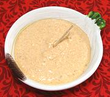

|
Körözött / LiptauerHungary - Körözött | ||||
| Makes: Effort: Sched: DoAhead: |
1-1/3 cup ** 10 min Yes |
A Hungarian party essential, this cheese spread goes very well with robust substrates like dark or whole wheat bread, rye crackers and the like. It may be a bit strong for white things. | |||
|
8 8 4 2 2 2 2 1/2 ar |
oz oz oz T t t t |
Feta Cheese (1) Farmer's Cheese Butter, soft Onion Caraway seed Anchovy Fillet Paprika Dijon Mustard Sour Cream |
Make: - (10 min)
|